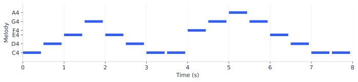

重点 02 / 清唱、哼唱、旋律 → 伴奏
保留这段清唱，给它配一段伴奏
输入人声，目标是同一时段的器乐。先把这种“正确配对”造出来，再让模型学旋律与伴奏的关系。
① 一首多轨歌，就能拆出一条训练样本
MUSDB18：150 首，100 首训练、50 首测试，约 10 小时。 HQ 版提供 44.1 kHz 双声道 WAV，含人声、鼓、贝斯、其他四类 stem（分轨）。下面借它的文件结构造样本；它原本是分离评测数据集。数据说明
一首歌/
vocals.wav ───────────────────→ 条件：清唱
drums.wav + bass.wav + other.wav → 目标：伴奏
mixture.wav → 完整混音，辅助核对
同一个采样点的加法示意：
鼓 0.10 + 贝斯 0.03 + 其他 0.07 = 伴奏 0.20
伴奏 0.20 + 人声 0.20 = 混音 0.40
只有混音？ 用分离模型得到 估计人声 + 估计伴奏，再筛漏声、失真、错位。AnyAccomp 的公开方案用约 8,000 小时歌曲构造清唱 / 伴奏配对；这类自动拆轨是伪标签，不能当成无误差原始分轨。AnyAccomp §3.1
② 听一条：输入、目标、合成结果
条件：8 秒“哼唱”
程序合成的人声类音色，模拟旋律输入。
目标：8 秒伴奏
键盘 + 贝斯 + 鼓；与输入共用时间轴。

{
"song_id": "demo_001", "start": 0, "end": 8,
"condition_audio": "vocal-24k.wav",
"target_audio": "accompaniment-24k.wav",
"sample_rate": 24000
}
两条波形都是 1 × 192000，因为 8 秒 × 24000。配对清洗只记三件事：
| 实际问题 | 怎么改数据 | 不改会教出什么 |
|---|---|---|
| 只裁掉人声开头 0.25 秒 | 两轨共用起止时间；检查分离输出延迟 | 伴奏总慢半拍 |
| 目标伴奏残留人声 | 重新分离或剔除；听“伴奏单轨” | 生成伴奏时又唱出一层人声 |
| 同一首歌切出 30 段 | 按整首歌分训练 / 测试，再切段 | 测试集看起来很强，换新歌就差 |
增强也要成对： 给人声升 2 个半音，目标伴奏也升 2 个半音；给两轨都变速 1.25 倍，8 秒都变成 6.4 秒。只处理一边，配对关系就坏了。增强后的样本仍跟原曲放同一数据分区。
③ AnyAccomp 这一类模型，吃什么、猜什么？
论文先提取 24 维、50 Hz 的 chroma：8 秒得到 24 × 400，再经 VQ-VAE 编成条件。它的生成主干是 Transformer，但训练目标是 Flow Matching，不是下一个 token 的交叉熵。模型 §3
④ 不猜 token，怎么计算 loss？
把整张目标频谱缩成两个数来算。真实模型有很多时频位置；本例只学习一个固定样本、两个可训练参数。
目标 z₁ = [0.8, 0.2] 抽到的噪声 z₀ = [0.2, -0.4]
训练时随机选 t=0.5
当前状态 zₜ = (1-t)z₀ + tz₁ = [0.5, -0.1]
正确速度 v* = z₁-z₀ = [0.6, 0.6]
模型看到：[人声条件，zₜ，t] → 猜速度 [0.1, 0.0]
MSE = ((0.1-0.6)² + (0.0-0.6)²) / 2 = 0.305
把预测速度学到 [0.6, 0.6]
玩具模型 v=W；点击真的更新 W。真实网络还会随条件、状态与 t 改变预测。
给人声条件与噪声，从 t=0 开始。每次走 Δt=0.25：z ← z + 0.25 × 模型预测速度。
初始速度只会走到 [0.3, −0.4]；学好后走到约 [0.8, 0.2]。训练是更新速度预测器的参数；推理是固定参数，反复更新生成状态。本例省略论文中的微小终点噪声和辅助表征损失，也没有运行真实声码器。
⑤ 最后如何与清唱合成？
用户清唱 → 提取旋律条件 → 生成伴奏频谱 → 声码器输出伴奏
保留的用户清唱 + 生成的伴奏 → 对齐时间、调音量 → 混音
听“清唱 + 伴奏”的组合
这里播放前面两条程序合成的示例轨道之和，用于理解混音；不是上面两个参数生成的音频。
只给哼唱时，不一定知道完整和声与风格；同一旋律可以有多种合理伴奏。评测重点是节拍跟得上、和声合适、不漏人声，不要求复刻唯一参考录音。听三种失败例子 →